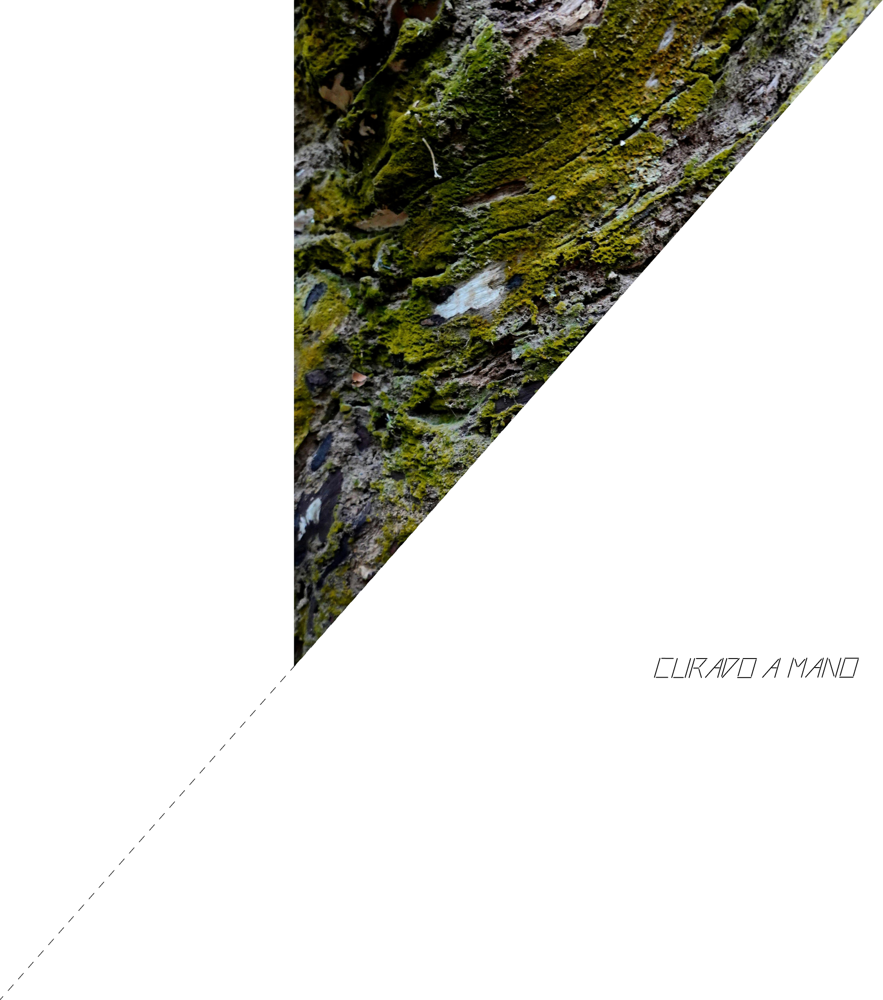
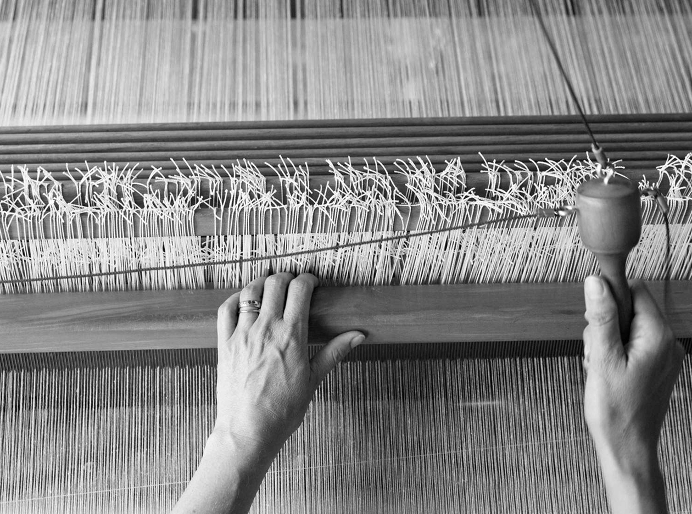
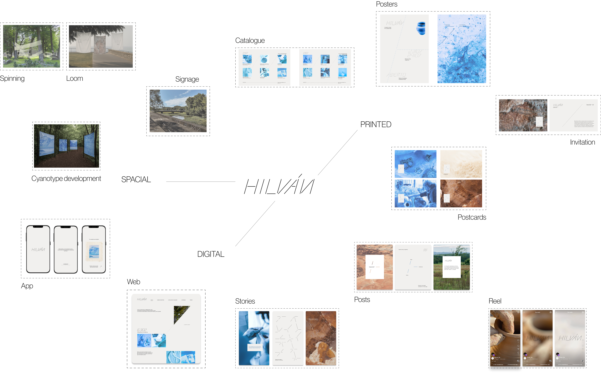
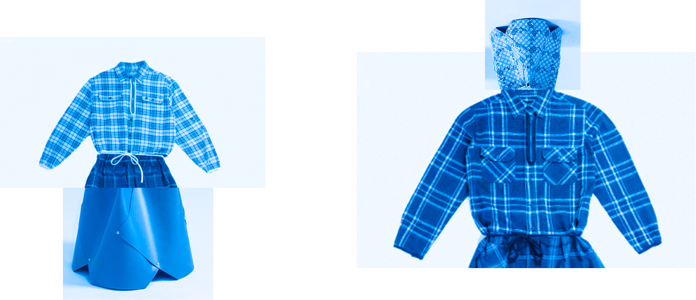

[Costura de puntadas largas y sueltas]

Un proyecto que reúne el acto único de hacer con nuestras propias manos. Poner el cuerpo, experimentar con la materialidad, la textura y el valor que se encuentra en estos gestos. El deseo de Hilván es darle forma a un proyecto que fusiona materia e hilo, e inspirar a otros a mantener vivas las prácticas manuales.
Cada una de las piezas creadas busca recuperar el sentido de lo hecho a mano, algo que muchas veces pasamos por alto hoy por los avances de la tecnología y la facilidad con la que resuelve nuestras necesidades. Una de sus consecuencias es que empezamos a olvidar todo lo que somos capaces de hacer con nuestras manos.

Artesanos en Argentina
Seres que crean desde las raíces de nuestra tierra y nuestras materias primas. Texturas, colores y formas los inspiran a crear.
Por eso proponemos un encuentro, realizado por primera vez en Buenos Aires, donde artesanos y artistas se reúnen para crear, inspirar y compartir.
Talleres ambos días. ¡Sé parte!
Todos invitados a compartir e intercambiar conocimiento.
Sello de identidad personalizado para artesanos
Sistema de Identidad



Fanzine artesanal
Esta pieza fue realizada completamente a mano por Elisa para el proyecto. Fue creada a través del collage, usando recortes de prendas de la colección y textiles. La intención detrás de su creación fue transformar el fanzine en una pieza fusionada con la indumentaria, algo coleccionable y memorable.
La autora buscó reinventar y reconceptualizar los objetos presentados. Las cosas son lo que percibimos que son; somos nosotros quienes les asignamos valor. Entonces démosles un significado y compartámoslas con el mundo para que puedan ser vistas y apreciadas.
Libro de concepto y archivo
Invitaciones para artesanos
Memoria Postal
Piezas textiles de cianotipo hechas a mano


Camisa hecha a mano
Esta pieza fue tejida y construida completamente a mano por Elisa, puntada por puntada. Su forma está inspirada en los quillangos, prendas tradicionales utilizadas por los pueblos originarios del sur de Argentina para protegerse del intenso frío patagónico.
La capucha de gran tamaño recuerda su función maternal: las mujeres llevaban a sus bebés dentro de ella, transformando la prenda en refugio y vínculo. Las puntadas azules de hilván hacen referencia al nombre del proyecto. De este modo, la pieza se convierte en un acto de memoria y respeto hacia las comunidades indígenas de Argentina, verdaderas guardianas de los saberes manuales ancestrales.